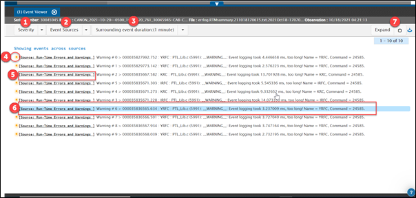
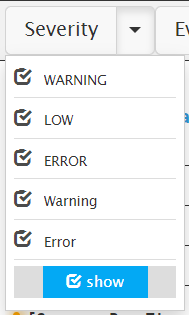
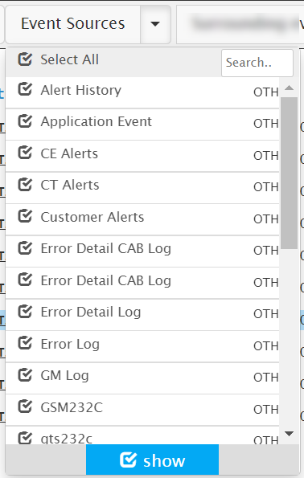
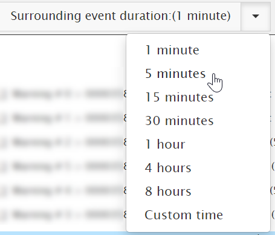

How to View Surrounding Events
When troubleshooting problems, you could be interested in seeing all the events across multiple event sources, rather than from a single source. For example, assume that your device generates access details from one log source (log file), errors in another log file, and user activity in a third file or source.
In such a scenario, you would not only be interested in looking at events from one source, but also events across all the sources sorted by time, so that you can quickly see what has been happening across the entire system at a given point in time.
For instance, if you have ten different event files (searching within a file specifically in a log bundle), for instance within a security log file, there can be other files in the bundle such as access log, system log, fault log, and so on. When you are searching for a specific event in time in the access log, you would like to know what other events occurred about that time in the security log or the fault log. Using the surrounding events feature, you will get all the time series-related events stitched together.
To view surrounding events across all the sources within a log bundle, do this:
- Select the Events checkbox in the Facet pane.
- Start a search using one or more of these options:
- Enter a search string in the Search bar. (Refer to the Glassbeam Explorer Syntax for more information on using the search syntax.)
- Filter date range filters.
- Filter using Attribute Search.
- Filter using date picker.
- Click an event source in the search results area.
The selected event is displayed in an Event Viewer instance, including 30 lines before and after the selected event. The surrounding events data that is displayed is 1 minute prior and after to the selected event. The current view in the window displays a custom configurable number of records.

|
Number |
Description |
|
1 |
 Check or uncheck the severities based on which you wish to filter the surrounding events. The filter is applied only on the surrounding events and NOT on the ‘Event Of Interest’ (the selected event that is highlighted and annotated as in the above screen shot). When all the severities are selected, it means that the selected severity filters are applied to all the surrounding events. When none of the severities are selected, it means that surrounding events are displayed without any severity filter being applied to them. |
|
2 |
 Check or uncheck the event sources based on which you wish to filter the surrounding events. The filter is applied only on the surrounding events and NOT on the ‘Event Of Interest’ (the selected event that is highlighted and annotated as When all the event sources are selected, it means that the selected event source filters are applied to all the surrounding events. When none of the event sources are selected, it means that surrounding events are displayed without any event source filter being applied to them. |
|
3 |
 If the surrounding event duration is selected as 30 minutes, all the events surrounding the ‘Event Of Interest’ (the selected event that is highlighted and annotated as |
|
4 |
At your organization level, event of a certain severity is configured to be indicated with a certain colour. For example, below is a list of severity names and the corresponding colour indicators. Successful – Green Info - Indigo Warning – Blue Error – Red Low – Yellow All the events displayed in the event viewer will begin with the colour coding configured for the respective severity. |
|
5 |
Event Description is preceded by the event source name. |
|
6 |
‘Event Of Interest’ - the selected event that is highlighted and annotated as in the above screen shot. When a filter is applied, the page automatically scrolls to the highlighted event/Event Of Interest. |
|
7 |
Check here to expand all the events in one shot. Uncheck to collapse the expanded events in one shot. |
Note: The event descriptions that do not fit into a single line are followed by ellipsis (3 dots). On click of the event description, the description expands allowing you to see the complete event description.
Created with the Personal Edition of HelpNDoc: Free Web Help generator